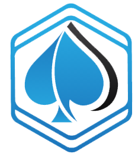

Back-end & Programming
As a backend developer I mainly work with JS serverside frameworks: NodeJS, ExpressJS, AngularJS and MongoDB for the database.
Prior to using JS I managed to compete in a competition with a complex calender web app built on Ruby on Rails.
I am also familiar with some PHP and Wordpress.
Besides websites I have knowledge in C++, C#, Java, Ruby, Python and I always look forward to expanding my software development knowledge.
Backend Projects

 If you want a website or a web app with great design, high quality code and big variety of functionalities, me and my friends from WebAnD will do it for you in no time!